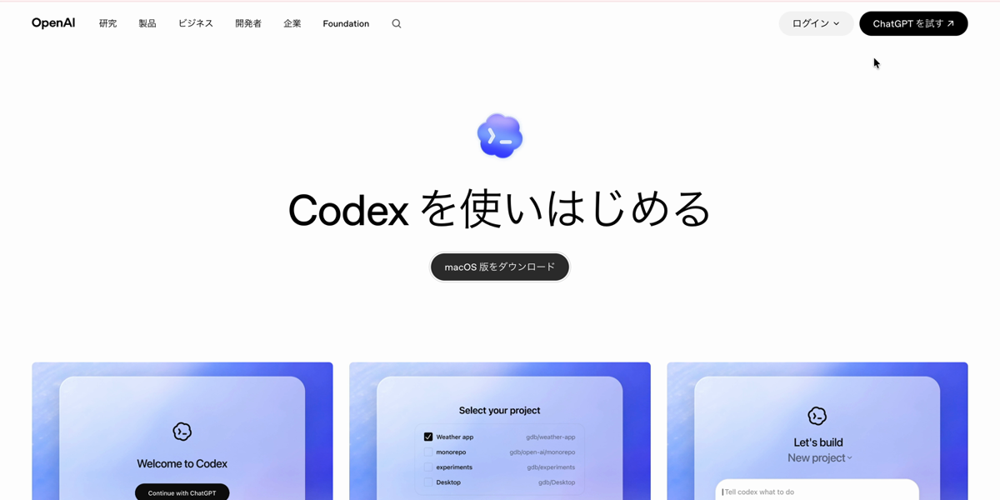
AI-X講座にお申し込みの皆様へ
Codexデスクトップアプリを事前に準備してください
講座当日はCodexの画面を使って進めます。ChatGPTにログインできる状態にして、MacまたはWindowsにCodexデスクトップアプリをインストールし、練習用フォルダで動作確認まで済ませておいてください。すでにClaude Codeを使い慣れている方は、講座中の作業でそのままClaude Codeを使っていただいても大丈夫です。
ただし、当日の説明画面はCodexを基準にします。Codexは画像生成の相談や作成まで同じ画面で進めやすいため、初心者の方にも扱いやすいアプリです。
事前確認
ChatGPTアカウント
ChatGPTの有料版を使っている方は、そのアカウントでCodexを利用できます。無料版でも現在はCodexを利用できる案内がありますが、利用上限や提供状況が変わる可能性があります。
無料版で参加予定の方は、講座前に必ずCodexデスクトップアプリでログインし、動作確認まで済ませてください。
2
Applicationsフォルダへ入れる
ダウンロードしたファイルを開き、Codex.appをApplicationsフォルダへドラッグします。
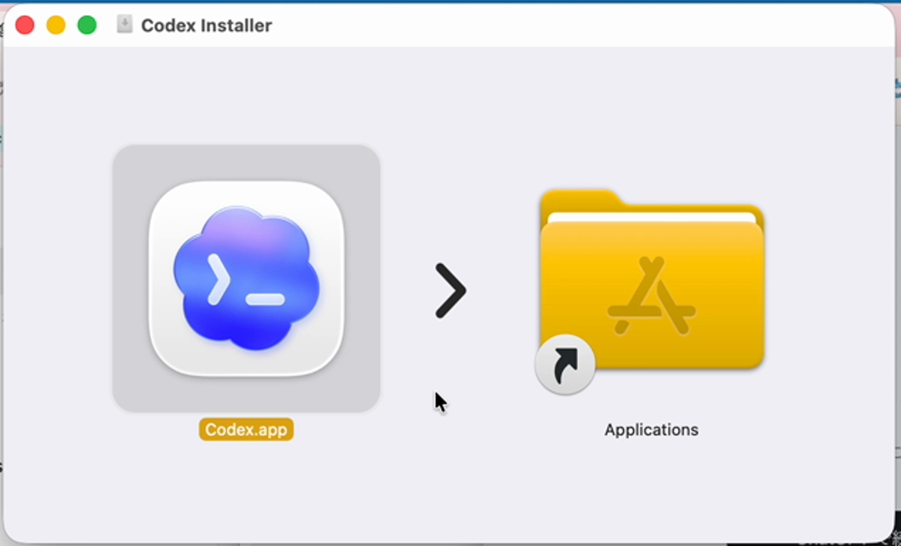
3
Codexが入ったことを確認する
ApplicationsフォルダにCodex.appが入っていればインストール完了です。
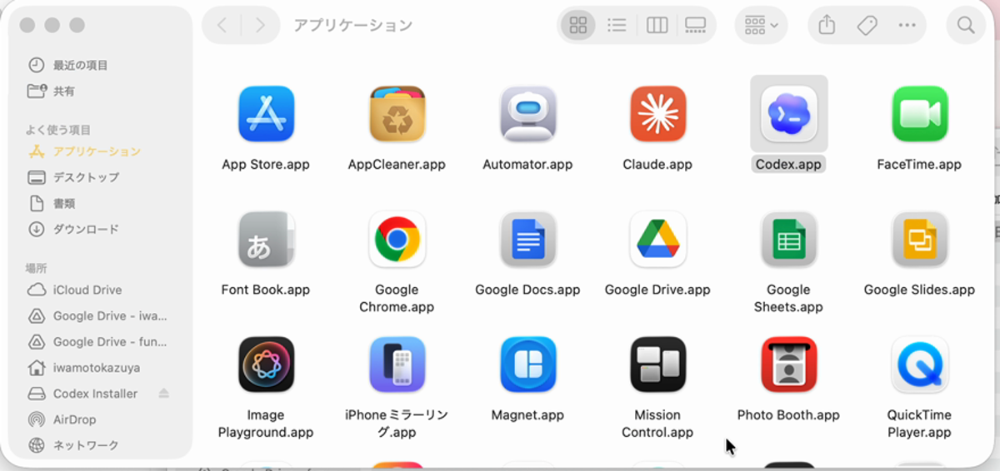
4
Codexを開き、ChatGPTアカウントでサインインする
初回はサインイン画面が表示されます。「ChatGPTで続行」を押し、講座で使うChatGPTアカウントでサインインしてください。
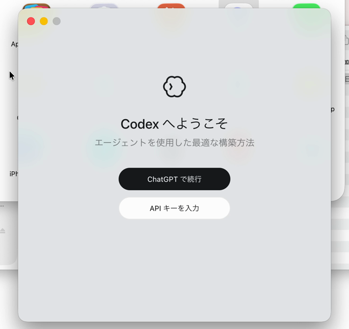
5
AI-Xフォルダを作る
Finderでデスクトップを開き、新規フォルダを作成して、名前を AI-X にします。
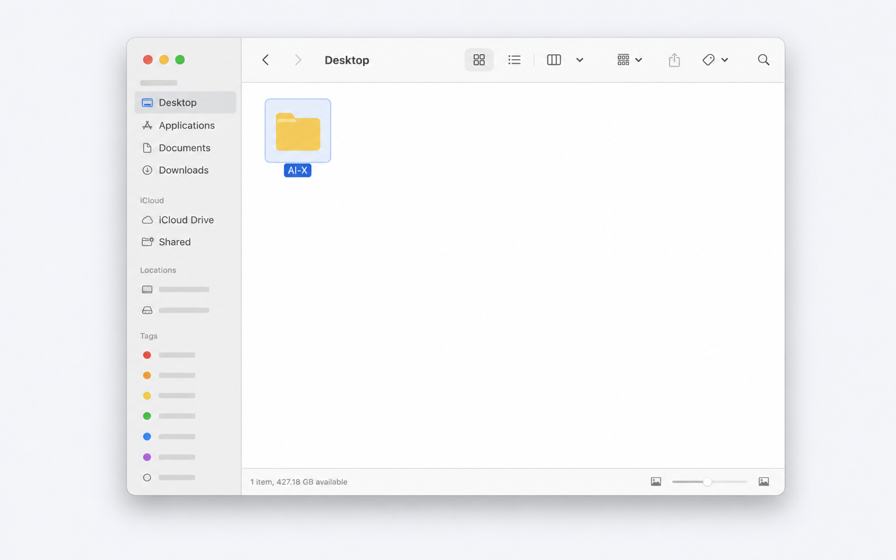
6
練習用フォルダを選ぶ
先ほど作った AI-X フォルダをプロジェクトとして選びます。
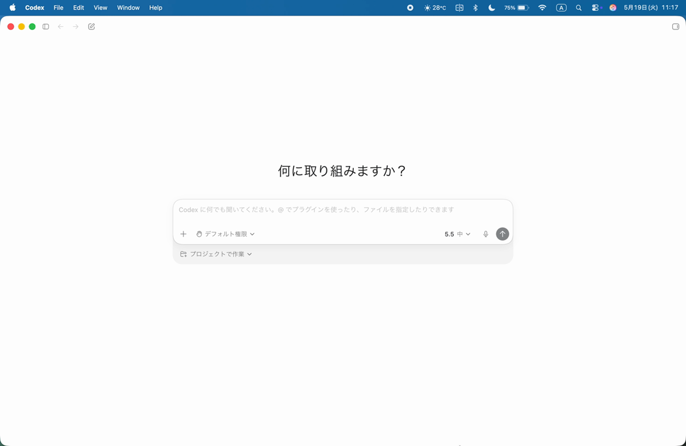
7
最初の依頼を送る
プロジェクトを選んだら、下の文章を送ってみてください。
このフォルダについて説明してください。まだ何もなければ、空のフォルダだと教えてください。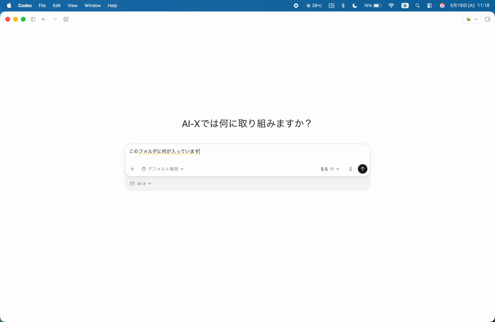
8
返答とファイル作成を確認する
フォルダの中身を確認する返答が出たら、次にメモファイルの作成を頼みます。作成されたファイルが表示されれば動作確認は完了です。
講座受講用のメモファイルを作成しておいて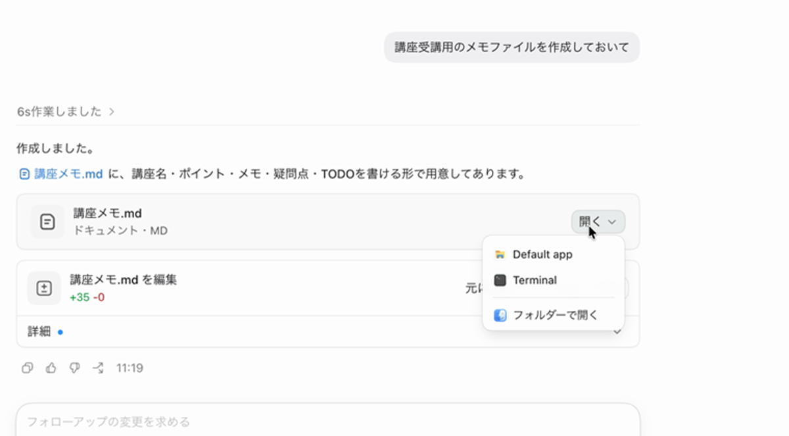
Windows
Windows版セットアップ
Windowsをご利用の方は、Windows版のCodexをインストールし、ChatGPTアカウントでサインインします。
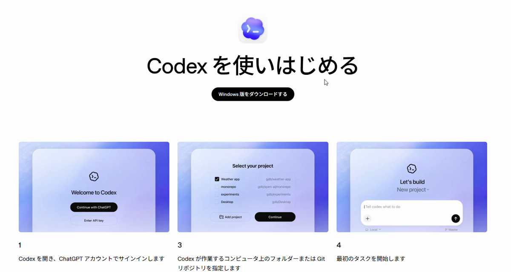
2
Codexをインストールする
ダウンロード後、画面の案内に従ってCodexをインストールします。Windowsの確認画面が出た場合は、内容を確認して進めてください。
3
Codexを開き、ChatGPTアカウントでサインインする
初回はサインイン画面が表示されます。メールアドレス、Googleアカウント、Microsoftアカウントなど、ChatGPTで使っている方法を選んでください。
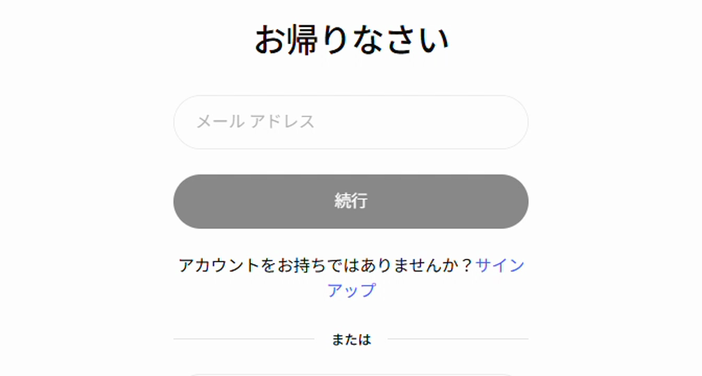
4
サインイン完了を確認する
ブラウザに「Signed in to Codex」と表示されたら、タブを閉じてCodexアプリに戻ります。
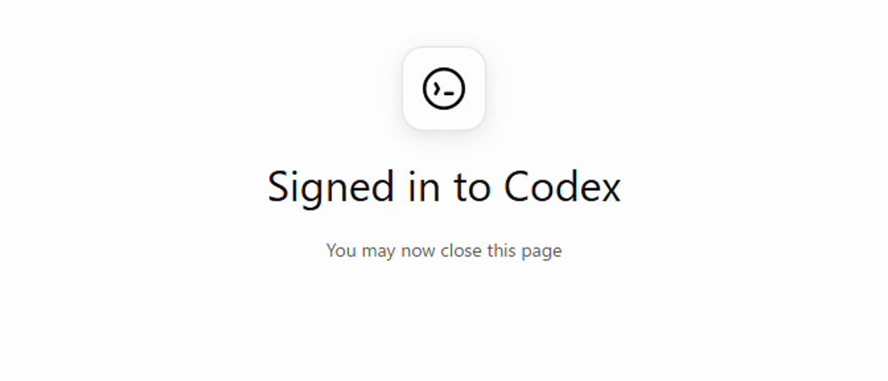
5
AI-Xフォルダを作る
エクスプローラーでデスクトップを開き、右クリックから「新規作成」→「フォルダー」を選んで、名前を AI-X にします。
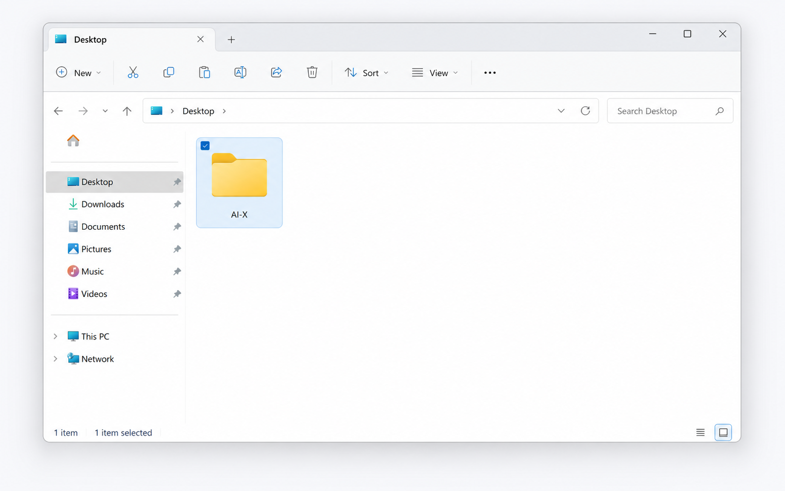
6
練習用フォルダで動作確認する
Codexで AI-X フォルダをプロジェクトとして選びます。
次の2つを順番に試してください。
このフォルダについて説明してください。まだ何もなければ、空のフォルダだと教えてください。講座受講用のメモファイルを作成しておいて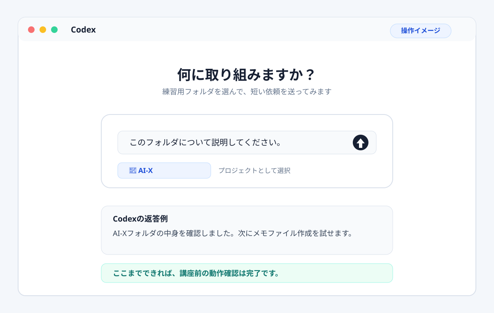
Windowsでうまくいかない時
よくあるつまずきと対処
まずはアプリの再起動、サインインし直し、別のネットワークでの確認を試してください。設定変更が必要そうな場合は、無理に進めずスクリーンショットを共有してください。
ダウンロードや起動で止まる
Microsoft StoreからCodexを開けない、または起動直後に止まる場合は、Storeの「ダウンロード」画面で更新を確認し、Codexを再起動してください。
サインイン画面が白い、または通信エラーが出る
VPN、プロキシ、セキュリティ系の通信フィルターが影響することがあります。Codexを再起動し、必要に応じて別の回線でも試してください。
「Working」のまま進まない
30〜60秒待っても変わらない場合は、作業を止めて新しいスレッドで短い依頼からやり直してください。最初はフォルダ説明だけで十分です。
PowerShellの実行エラーが出る
「running scripts is disabled」のような表示は、Windowsの実行ポリシーでコマンドが止まっている状態です。講座前準備では設定を変えず、画面を共有してください。
管理者権限を求められる
会社や学校のPCでは、インストールや一部の操作に管理者権限が必要な場合があります。自分で変更できない場合は、PCの管理者に確認してください。
利用上限の表示が出る
無料版や利用量が多い場合は、Codexの上限に当たることがあります。時間を置いて再度試すか、講座前にログインと最初の動作確認だけ済ませてください。
Windowsの詳しいエラー画面を確認する
サンドボックス、権限、Storeの不明なエラーなどは、再現画像付きの別ページにまとめています。
最後に確認
チェックリスト
ここまで終わっていれば、講座当日はすぐに実践へ入れます。
事前準備が終わったら
Codexの初期設定も済ませておく
必須の準備が終わった方は、フォルダ整理、Browser Use、Computer Use、Worktreeの基本だけ確認しておくと、当日の実践が進めやすくなります。
エラーが出た場合
講座前に共有するもの
その他のエラーが出た場合は、エラー画面のスクリーンショットを撮って保存しておいてください。
- Mac / Windowsどちらか
- エラー画面のスクリーンショット
- 止まった手順
- 表示されたエラーメッセージ
注意
初回練習はダミー資料で
初回練習では、実際の顧客情報・個人情報・社外秘資料は使わないでください。まずは練習用フォルダやダミー資料で動作確認をしてください。